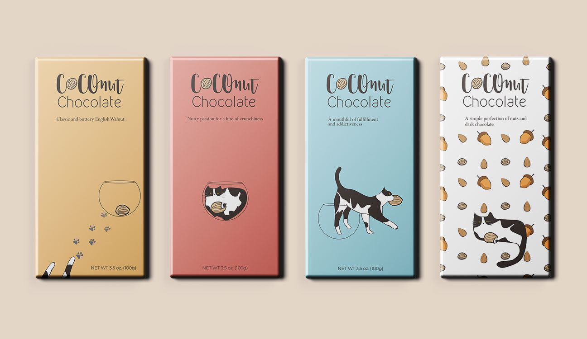

Project Task This project aims to develop a chocolate bar package design that speaks about who I am. As a multi-task designer with many identities, as well as an artist, advertiser, and entrepreneur, I enjoy being myself no matter the task and will not hesitate to perfectly adapt to the needs of the environment. However, as much as I love my current identities, I never stop reaching out to discover what else I can do and how much more am I capable of.
Inspiration The name Coco was given to me by my mom and I do not believe there was any deep meaning behind it. The biggest possibility may be that my mom heard this name on TV shows and decided to name her baby after it. However, I gradually became attached to it, hence why I have been using it since kindergarten. I find this name easy to remember and that it surprisingly matches my face. Therefore, since the brand will be talking about me, I used my name, “Coco,” combined with “nut,” to be the brand’s name. This is because nuts are not only perfect with chocolate, but also because nuts tell about the wild part of my personality. When it comes to building up imagination, I always go bold, crazy, nutty, and even a bit sassy. I love how imagination and ideas have no limit and are always going in new directions.
Description The nuts in my 4-koma represent tasks, topics and fields that attract or challenge me. I believe “staying woke” is necessary for a successful designer, who should observe and interact with their surroundings. Therefore, I focus not only on myself, but also direct my attention to everything else around me. This first panel talks about my characteristics as a designer who enjoys learning new information and knowledge, observing people’s and society’s behaviors, and participating in community events and social movements. I am that cat chasing after nuts. The second panel features my flexibility on adapting and changing. There are lots of things in nature that I can’t change, but the fact that I can change my perspective or point of view to learn and see things makes me feel strong. Moving forward is the main message of the third panel. After enjoying the satisfaction of the results and the taste of victory, I don’t linger. Instead, I carry on with what I learned. As for the last panel, it exhibits my wonderland, with all the kinds of nuts that I have ever desired and pursued.